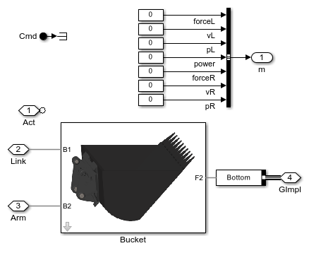
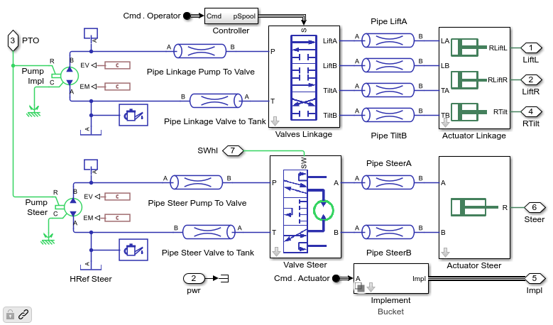
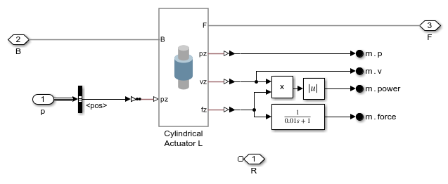
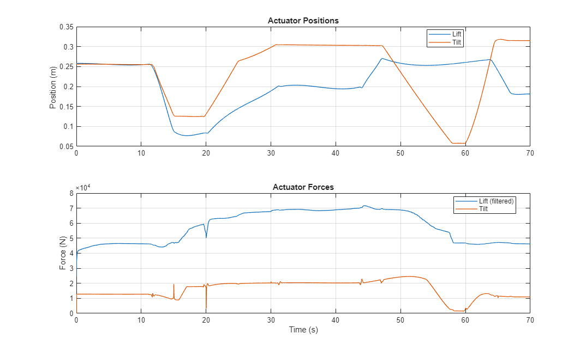
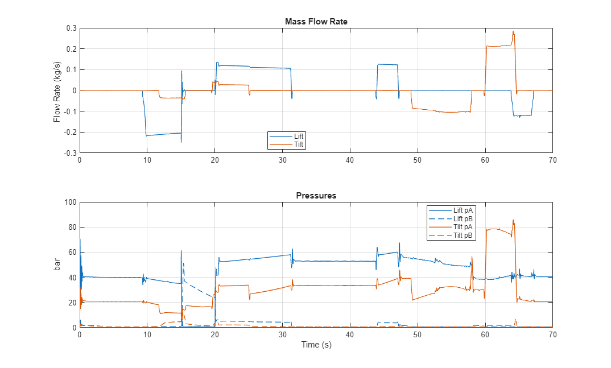

Wheel Loader Linkage

(return to Wheel Loader Design with Simscape Overview)
This example models a wheel loader linkage with two interchangeable implements (bucket, grapple). The actuation system can be modeled with an ideal actuator or a hydraulic network.
Contents
- Model
- Linkage Subsystem
- Bucket Subsystem
- Grapple Subsystem
- Actuator Subsystem: Hydraulic
- Valves Linkage Subsystem
- Actuator Linkage Subsystem
- Lift Actuator: Shaft
- Actuator Subsystem: Ideal
- Lift Actuator: Ideal
- Simulation Results: Bucket, Ideal
- Simulation Results: Grapple, Ideal
- Simulation Results: Bucket, Hydraulic
- Simulation Results: Grapple, Hydraulic
Model
This example models a wheel loader linkage.
The actuation model for the linkage and implements can be configured to use the following options
- Ideal: Cylinder positions are set using prescribed motion. Simulation runs very quickly. Used to determine actuator requirements.
- Hydraulic: Hydraulic pumps, valves, and cylinders are used to model the actuation system. Used to select hydraulic components and set pressure levels.
Linkage Subsystem
The wheel loader linkage has a lift and tilt actuator. The implement can be configured to be a bucket or a grapple.
Bucket Subsystem
The bucket subsystem contains only a model of the bucket. The interface to this mechanical model is composed of three frames. Two are connection points to the linkage and one is the location where the inertial load is added to represent the load it digs up and dumps out. The frame that interfaces to the load is placed in a Simscape bus. This is because the subsystem interface for all implements must be the same, and other implements need more connections than the bucket does.
Grapple Subsystem
The grapple subsystem contains the rake and two toothbars. Each toothbar can be raised or lowered by an actuator. The interface to this mechanical model is composed of two frames and a bus with connections to contact geometry. The frames are connection points to the linkage. The three point clouds are assembled in to a Simscape bus. The point clouds are used to detect contact with objects, such as a log, so that the grapple can pick them up and move them.
Actuator Subsystem: Hydraulic
In this configuration the cylinders are actuated by a hydraulic system. Pumps are driven by the PTO shaft, one for the linkage and implements and another for the steering system. Valves control the flow of hydraulic fluid to the actuators which extend and contract to the desired position.
The steering hydraulic system is included but in this model it is not connected to the chassis.
The interface from this 1D model of the hydromechanical system and the 3D multibody of the linkage is a 1D mechanical connection for the rod of each cylinder.
Valves Linkage Subsystem
Directional valves control the flow of fluid to the hydraulic cylinders. Flow from the pump can be directed to the head or rod side of the cylinder. A pressure relief valve protects the system from providing too much pressure to the cylinders.
A flow divider splits the pump flow between the tilt and flow valves. It measures the pressure differential between the two functions and controls the flow accordingly. This is used to maintain consistent actuator velocity whether one or both functions are active.

Actuator Linkage Subsystem
Two hydraulic cylinders lift the wheel loader linkage and a third cylinder is used to tilt the implement. The A and B ports are connected to the hydraulic network. The R port represents a 1D mechanical connection. This shaft connections are the interface to the 3D multibody model of the wheel loader linkage.
Lift Actuator: Shaft
The lift actuator can be modeled as an hydraulic actuator. In this configuration, the interface between the actuator model and the multibody joint between the cylinder and the rod is a 1D mechanical connection representing a shaft. Force and velocity information is exchanged between the 1D and 3D models to ensure consistent kinematic and dynamic behavior. This interface is suitable for any actuator model with a mechanical connection, including a lead screw or other electrical actuator.

Actuator Subsystem: Ideal
In this configuration the cylinders are motion actuated. The extension of the cylinder is prescribed by a time-based profile. The force required to actuate the cylinder is calculated by the simulation.
The actuator subsystem has no actuation models in it. It only contains a model to apply a countertorque to the power take-off (PTO) shaft that is commensurate with the amount of power it takes for the actuators to follow the prescribed motion.
Lift Actuator: Ideal
The lift actuator can be modeled as an ideal actuator. In this configuration, the translational motion of the joint between the cylinder and the rod accepts position as an input signal. The force required to follow this trajectory is calculated by the Simscape model.
Simulation Results: Bucket, Ideal
Run test with bucket. The load added to the bucket is a variable mass whose mass and size changes based on an input signal. Cylinder extension is specified as a time-based input and the force required to achieve the motion is calculated.
Elapsed Sim Time = 1.8457
Simulation Results: Grapple, Ideal
Run test with grapple. The load is a log that is resting on a base. Contact forces are modeled between the log and the base, grapple, and bin. Cylinder extension is specified as a time-based input and the force required to achieve the motion is calculated.
Elapsed Sim Time = 4.8563
Simulation Results: Bucket, Hydraulic
Run test with bucket. The load added to the bucket is a variable mass whose mass and size changes based on an input signal. The hydraulic system is modeled with pumps, valves, and cylinders and the valves are controlled by operator inputs specified in time.
Elapsed Sim Time = 57.4004
Simulation Results: Grapple, Hydraulic
Run test with grapple. The load is a log that is resting on a base. Contact forces are modeled between the log and the base, grapple, and bin. The hydraulic system is modeled with pumps, valves, and cylinders and the valves are controlled by operator inputs specified in time.
Elapsed Sim Time = 107.1314